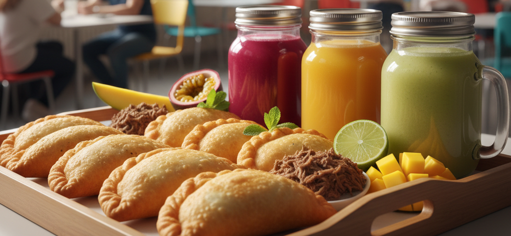
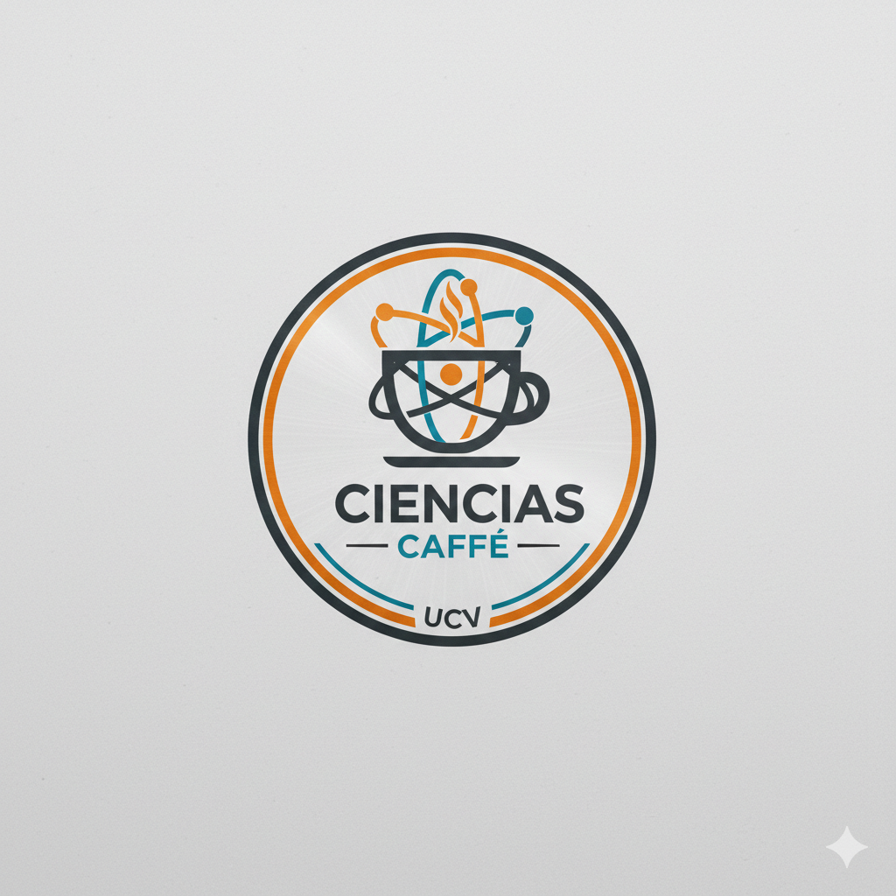
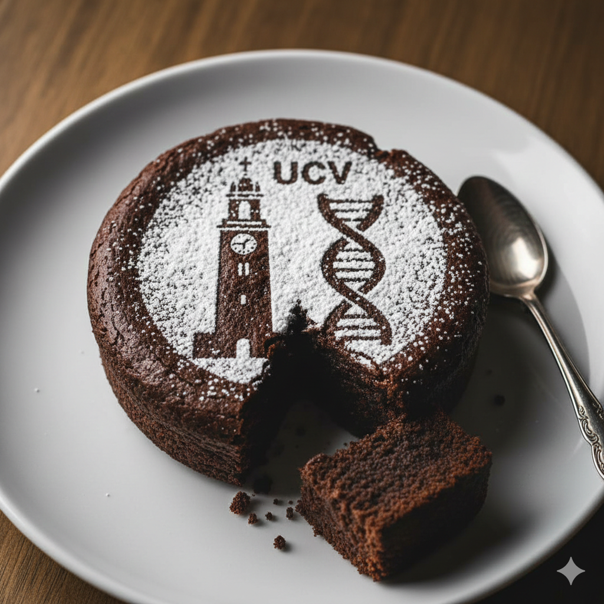
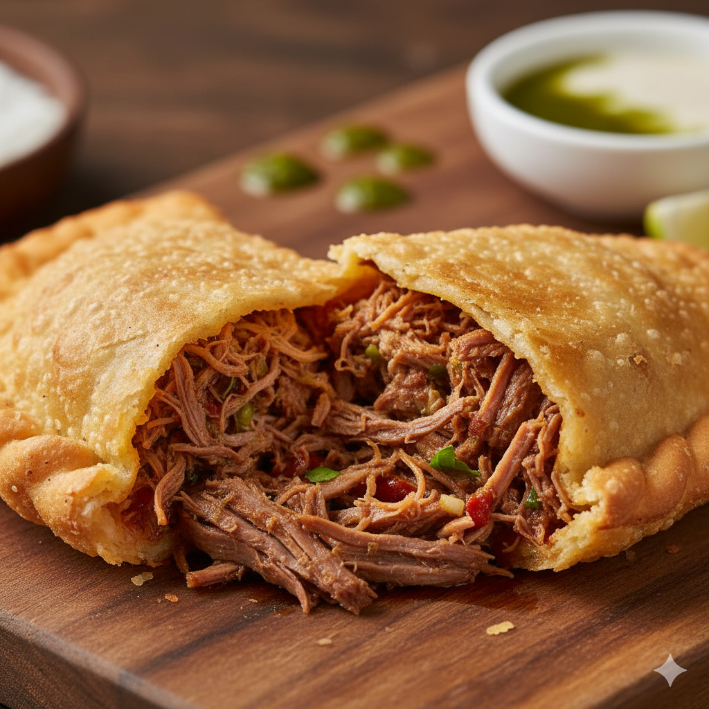

Nuestras Fórmulas
☕
Dosis de Cafeína
Ideal para el post-examen de Física III.
🍔
Almuerzo Lab
Proteína pura para aguantar el laboratorio.
🌐
Zona Free-Wi-Fi
Conéctate y descarga tus papers aquí.
El combustible oficial para vencer la sombra.

Las más operadas de toda la facultad.
Ideal para el post-examen de Física III.
Proteína pura para aguantar el laboratorio.
Conéctate y descarga tus papers aquí.
Lo último del cafetín, la facultad y los memes científicos.

cienciascaffe_ucv Hace 2h¡Hora de un receso merecido! ☕ Nuestro café te espera para recargar energías. #CienciasCaffe #UCV
Ver los 37 comentarios...¡Atención futuros científicos! 📣 Buscamos nuevos talentos para el equipo. ¡Pasa por el local!

👁️ 8.2K
👁️ 21.1K